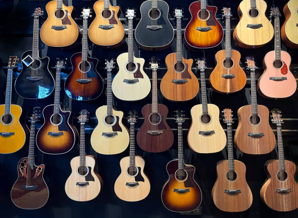

A from-scratch page about one of the most expressive and timeless instruments in music.
Back to Professional Pages Jump to Tableau Graph Open Guitar Finder App
Acoustic guitars combine craftsmanship, tonewood design, string tension, and playing technique into one instrument. They can be used for fingerstyle, strumming, singer-songwriter music, bluegrass, worship music, and simple campfire songs.
This page shows basic HTML and CSS features from scratch, including lists, an image, an embedded YouTube video, an on-page anchor, a linked stylesheet, positioned content sections, and a live Tableau visualization.

A custom guitar image used on this page instead of a Bootstrap theme image.
This embedded video section helps satisfy the assignment requirement and fits the acoustic guitar theme.
I also created a separate AI-assisted mini app for this project. It helps a user find a good acoustic guitar type based on tone preference, budget, and playing style.
The live graph below is an embedded Tableau Public visualization related to guitar scales. It is interactive once the site is hosted online.
This is the anchor target section. Use this link to go back to the top of the page.